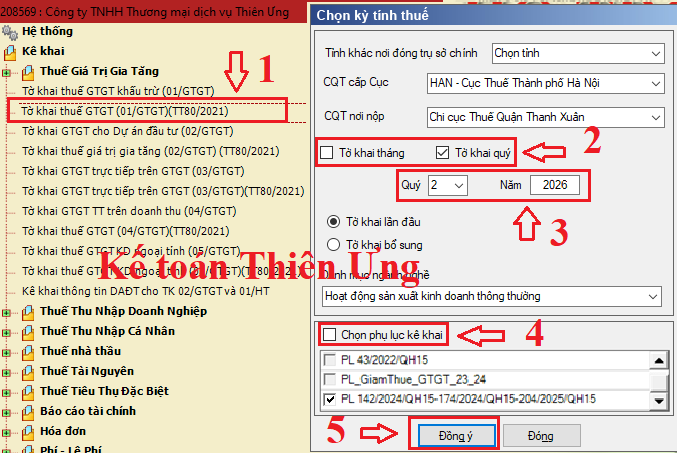
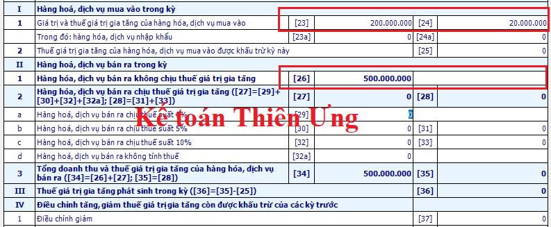
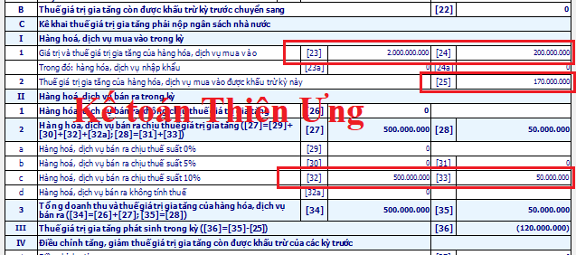
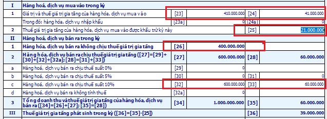
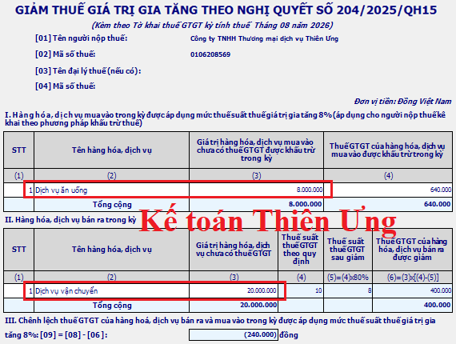
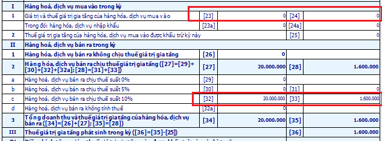

Cách lập tờ khai thuế 01/GTGT theo quý hoặc theo tháng - Cách ghi tờ khai thuế GTGT theo phương pháp khấu trừ trên phần mềm HTKK. Hướng dẫn cách kê khai thuế GTGT được khấu trừ và Không được khấu trừ; Cách kê khai giảm 8% thuế GTGT.
- Mẫu Tờ khai 01/GTGT(TT80/2021) là áp dụng cho những Doanh nghiệp kê khai thuế GTGT theo phương pháp Khấu trừ nhé. Những Doanh nghiệp kê khai thuế GTGT theo phương pháp Trực tiếp áp dụng Mẫu 04/GTGT(TT80/2021) nhé.
- Để hạn chế 1 số lỗi và cập nhật đúng Mẫu tờ khai -> Các bạn phải kê khai trên phần mềm HTKK mới nhất nhé, các bạn có thể tải về tại đây: Phần mềm HTKK thuế mới nhất
Sau khi cài đặt xong các bạn mở phần mềm HTKK ra:
Đầu tiên: Mã số thuế: Điền MST của DN mình => Đồng ý.
- Click vào phần “Hệ thống”: Điền các thông tin về DN của mình => “Ghi”
- Chọn “Thuế giá trị gia tăng” =>
=> “Tờ khai thuế GTGT (01/GTGT)(TT80/2021)”
=> Chọn kỳ theo quý hoặc theo tháng
=> Chọn các phụ lục (nếu có)
=> Đồng ý, thực hiện như hình dưới:
Lưu ý: Các mục còn lại sẽ tự động lấy theo thông tin của doanh nghiệp đã kê khai trong phần hệ thống. Nếu muốn thay đổi thì các bạn kích vào mũi tên sổ xuống rồi chọn.

Hướng dẫn cách ghi tờ khai thuế GTGT khấu trừ ghi chi tiết:
- Các chỉ tiêu cần nhập trên tờ khai thuế GTGT khấu trừ 01/GTGT đó là: Chỉ tiêu [21], [22], [23], [23a], [24], [24a], [25], [26], [29], [30], [31], [32], [33], [32a], [37], [38], [40b], [42],. Còn các chỉ tiêu còn lại phần mềm HTKK sẽ tự động cập nhật.
Chỉ tiêu [21]: Nếu không phát sinh các bạn Tích vào đây (Nhớ là: Dù DN bạn không phát sinh gì thì vẫn phải nộp tờ khai thuế GTGT và click vào đây nhé)
Chỉ tiêu số [22]: Thuế GTGT còn được khấu trừ kỳ trước chuyển sang:
- Chỉ tiêu này sẽ được lấy từ chỉ tiêu [43] của tờ khai kỳ trước chuyển sang. (Phần mềm sẽ tự động cập nhật).
Lưu ý: Nếu bạn cài lại phần mềm HTKK hoặc cài lại win của máy tính, hoặc máy tính lần đầu cài HTKK (Nói chung là dữ liệu ở Chỉ tiêu 43 của kỳ trước => Không tự động nhảy sang Chỉ tiêu 22 kỳ này) => Thì bạn sẽ phải nhập bằng tay số tiền ở Chỉ tiêu [43] của kỳ trước vào Chỉ tiêu 22 này nhé.
-> Nên khi Kê khai ở Chỉ tiêu này các bạn phải xem lại Chỉ tiêu 43 của Tờ khai chính thức kỳ trước nhé (Nhớ là Tờ khai chính thức lần 1 nhé, không phải Tờ khai bổ sung điều chỉnh nhé).
----------------------------------------------------------------------------
Kê khai hoá đơn GTGT đầu vào:
Chỉ tiêu số [23]: Giá trị của hàng hóa, dịch vụ mua vào:
- Là tổng giá trị của hàng hóa, dịch vụ mua vào trong kỳ chưa có thuế GTGT.
Chỉ tiêu số [24]: Thuế GTGT của hàng hóa, dịch vụ mua vào:
- Là tổng số tiền thuế GTGT của hàng hóa, dịch vụ mua vào trong kỳ (Dù được khấu trừ hay không được khấu trừ, các bạn cũng nhập hết vào đây nhé).
Chỉ tiêu số [23a]: Giá trị của hàng hóa, dịch vụ nhập khẩu:
- Là giá trị của hàng hóa, dịch vụ nhập khẩu trong kỳ chưa có thuế GTGT.
Chỉ tiêu số [24a]: Thuế GTGT của hàng hóa, dịch vụ nhập khẩu
- Là số tiền thuế GTGT của hàng hóa, dịch vụ nhập khẩu trong kỳ
Chỉ tiêu số [25]: Tổng số GTGT được khấu trừ kỳ này:
- Là tổng số tiền thuế GTGT mua vào trong kỳ đủ điều kiện được khấu trừ (Tức là số tiền thuế GTGT được khấu trừ thì mới được nhập vào đây)
-----------------------------------------------------------------------------
Kê khai hoá đơn GTGT đầu ra:
Chỉ tiêu số [26]: Hàng hóa, dịch vụ bán ra không chịu thuế GTGT:
- Là tổng doanh thu bán ra trong kỳ của mặt hàng không chịu thuế GTGT.
Chỉ tiêu số [27] và [28]: Không phải nhập vì phần mềm tự động cập nhật:
Chỉ tiêu số [29]: Hàng hóa, dịch vụ bán ra chịu thuế suất 0%:
- Là tổng doanh thu bán ra trong kỳ của mặt hàng chịu thuế suất thuế GTGT 0%.
Chỉ tiêu số [30] và [31]: Hàng hóa, dịch vụ bán ra chịu thuế suất 5%:
- Là tổng doanh thu bán ra trong kỳ của mặt hàng chịu thuế suất thuế GTGT 5% và Tiền thuế GTGT.
Chỉ tiêu số [32] và [33]: Hàng hóa, dịch vụ bán ra chịu thuế suất 10%:
- Là tổng doanh thu bán ra trong kỳ của mặt hàng chịu thuế suất thuế GTGT 10% và Tiền thuế GTGT.
Chỉ tiêu số [32a]: Hàng hóa, dịch vụ bán ra không tính thuế:
- Là tổng doanh thu bán ra trong kỳ của mặt hàng không phải kê khai, tính nộp thuế GTGT.
- Các trường hợp không phải kê khai, tính nộp thuế GTGT các bạn xem tại Nghị định 181/2025/NĐ-CP
-----------------------------------------------------------------------------------
Sau đây Kế toán Diệu Tâm xin lấy ví dụ cụ thể:
Ví dụ 1: Công ty Diệu Tâm sản xuất, kinh doanh mặt hàng KHÔNG chịu thuế GTGT. Trong quý 4/2026 có phát sinh như sau:
- Doanh thu: 500.000.000đ
- Chi phí (hóa đơn đầu vào): 200.000.000đ. Thuế GTGT đầu vào: 20.000.000đ
Cách kê khai chỉ tiêu 23, 23a, 24, 24a, 25, 26 như sau:
Chỉ tiêu 23: 200.000.00đ
Chỉ tiêu 24: 20.000.000đ
Chỉ tiêu 23a + 24a: 0 (Vì không phát sinh hàng hóa, dv nhập khẩu)
Chỉ tiêu 25: 0 (Vì công ty SXKD mặt hàng Không chịu thuế nên ko được khấu trừ)
Chỉ tiêu 26: 500.000.000

Ví dụ 2: Công ty Diệu Tâm sản xuất, kinh doanh mặt hàng Chịu thuế GTGT 10%. Trong quý 4/2026 có phát sinh như sau:
- Doanh thu: 500.000.000. Thuế GTGT phải nộp: 50.000.000
- Hóa đơn đầu vào: 100.000.000. Thuế GTGT đầu vào: 10.000.000. Và có mua 1 xe ô tô 7 chỗ ngồi trị giá 1.900.000.000. Thuế GTGT: 190.000.000.
Cách kê khai chỉ tiêu 23, 24, 25, 32, 33 như sau:
Chỉ tiêu 23: 100.000.000 + 1.900.000.000 = 2.000.000.000
Chỉ tiêu 24: 10.000.000 + 190.000.000= 200.000.000
Chỉ tiêu 25: 10.000.000 + 160.000.000 = 170.000.000
Chỉ tiêu 32: 500.000.000
Chỉ tiêu 33: 50.000.000
=> Cách tính để ghi vào Chỉ tiêu 25: 170.000.000. Vì Công ty không phải là DN (Kinh doanh vận tải hành khách, du lịch, khách sạn, ô tô dùng làm mẫu và lái thử cho kinh doanh ô tô) => Nên thuế GTGT của ô tô mua vào chỉ được khấu trừ 160.000.000

Ví dụ 3: Công ty Diệu Tâm sản xuất, kinh doanh mặt hàng Chịu thuế GTGT 10% và Không chịu thuế. Trong quý 4/2026 có phát sinh như sau:
+) Tổng Doanh thu là: 1.000.000.000. Trong đó:
- Doanh thu từ việc bán hàng Chịu thuế: 600.000.000. Thuế GTGT: 60.000.000
- Doanh thu từ việc bán hàng Không chịu thuế: 400.000.000
+) Hóa đơn đầu vào gồm:
- Hóa đơn đầu vào dùng riêng cho việc SXKD mặt hàng Chịu thuế: 150.000.000. Thuế GTGT đầu vào: 15.000.000.
- Hóa đơn đầu vào dùng riêng cho việc SXKD mặt hàng Không chịu thuế: 160.000.000. Thuế GTGT đầu vào: 16.000.000
- Hóa đơn đầu vào dùng Chung cho việc SXKD mặt hàng Chịu thuế và Không chịu thuế: 100.000.000. Thuế GTGT: 10.000.000.
Cách kê khai chỉ tiêu 23, 24, 25, 26, 32, 33 như sau:
Chỉ tiêu 23: 150.000.000 + 160.000.000 + 100.000.000 = 410.000.000
Chỉ tiêu 24: 15.000.000 + 16.000.000 + 10.000.000 = 41.000.000
Chỉ tiêu 25: 15.000.000 + 6.000.000 = 21.000.000
Chỉ tiêu 26: 400.000.000
Chỉ tiêu 32: 600.000.000
Chỉ tiêu 33: 60.000.000
=> Cách tính phân bổ thuế GTGT để ghi vào Chỉ tiêu 25: 21.000.000.
- Tiền thuế GTGT đầu vào dùng riêng cho việc SXKD mặt hàng Chịu thuế => Sẽ được khấu trừ toàn bộ (Ghi vào chỉ tiêu 25)
- Tiền thuế GTGT đầu vào dùng riêng cho việc SXKD mặt hàng Không chịu thuế => Sẽ không được khấu trừ (Không được ghi vào chỉ tiêu 25)
- Tiền thuế GTGT đầu vào dùng Chung cho việc SXKD mặt hàng Chịu thuế và Không chịu thuế => Ta sẽ phải phân bổ dựa trên doanh thu, cụ thể như sau:
Theo Khoản 9 Điều 1 Thông tư 26/2015/TT-BTC quy định:
"Thuế GTGT đầu vào của hàng hóa, dịch vụ (kể cả tài sản cố định) sử dụng đồng thời cho sản xuất, kinh doanh hàng hóa, dịch vụ chịu thuế và không chịu thuế GTGT thì chỉ được khấu trừ số thuế GTGT đầu vào của hàng hóa, dịch vụ dùng cho sản xuất, kinh doanh hàng hóa, dịch vụ chịu thuế GTGT.
- Doanh nghiệp phải hạch toán riêng thuế GTGT đầu vào được khấu trừ và không được khấu trừ;
- Trường hợp không hạch toán riêng được thì thuế đầu vào được khấu trừ tính theo tỷ lệ (%) giữa doanh thu chịu thuế GTGT, doanh thu không phải kê khai, tính nộp thuế GTGT so với tổng doanh thu của hàng hóa, dịch vụ bán ra bao gồm cả doanh thu không phải kê khai, tính nộp thuế không hạch toán riêng được.
- Doanh nghiệp hàng tháng/quý tạm phân bổ số thuế GTGT của hàng hóa, dịch vụ, tài sản cố định mua vào được khấu trừ trong tháng/quý, cuối năm thực hiện tính phân bổ số thuế GTGT đầu vào được khấu trừ của năm để kê khai điều chỉnh thuế GTGT đầu vào đã tạm phân bổ khấu trừ theo tháng/quý.”
Như vậy:
+ Doanh thu từ việc bán hàng Chịu thuế là: 600.000.000: Chiếm 60%
+ Doanh thu từ việc bán hàng Không chịu thuế là: 400.000.000: Chiếm 40%
=> Do đó: Số thuế GTGT đầu vào dùng chung là: 10.000.000 sẽ được phân bổ như sau: Số thuế được khấu trừ: 10.000.000 x 60% = 6.000.000.

------------------------------------------------------------------------------------
Chỉ tiêu [34]; [35], [36]: (Phần mềm tự động cập nhật)
Chỉ tiêu [37] và Chỉ tiêu [38]: (Phát sinh khi kê khai bổ sung, điều chỉnh)
- Khi kê khai bổ sung của các kỳ trước, nếu xuất hiện Chỉ tiêu [12] trên tờ khai bổ sung KHBS là số âm (tức là trong ngoặc) thì nhập vào Chỉ tiêu [37], nếu là số dương thì bạn nhập vào Chỉ tiêu [38] của kỳ hiện tại.
Ví dụ: Bạn đang kê khai thuế GTGT cho tháng 9/2026. Nhưng tháng 02/2026 bạn phát hiện sai và phải vào tờ khai tháng 02/2026 để kê khai bổ sung điều chỉnh.
=> Sau khi kê khai bổ sung xong thì trên Phụ lục giải trình bổ sung KHBS xuất hiện Chỉ tiêu [12]: 2.000.000, tức là số dương (tăng số thuế được khấu trừ chuyển kỳ sau).
- Như vậy: Bạn sẽ phải nhập 2.000.000 vào Chỉ tiêu [38] của tờ khai tháng 9/2026.
- Trường hợp xuất hiện Chỉ tiêu 12: (2.0000.000) trong ngoặc tức là số âm=> Thì các bạn nhập số tiền đó vào Chỉ tiêu 37 của tờ khai tháng 9/2026.
Chi tiết các bạn xem tại đây nhé:
Hướng dẫn kê khai điều chỉnh bổ sung thuế GTGT
Chỉ tiêu [39] đến Chỉ tiêu [43]: Phần mềm sẽ tự động cập nhật
Chỉ tiêu [40b]: Áp dụng đối với trường hợp NNT thuộc đối tượng nộp thuế GTGT theo phương pháp khấu trừ có dự án đầu tư tại địa bàn tỉnh, thành phố trực thuộc trung ương cùng nơi đóng trụ sở chính, đang trong giai đoạn đầu tư thì lập hồ sơ khai thuế riêng cho dự án đầu tư và phải bù trừ số thuế GTGT của HHDV mua vào sử dụng cho dự án đầu tư với thuế GTGT của hoạt động sản xuất kinh doanh đang thực hiện.
- Chỉ tiêu [40b] là tổng số thuế GTGT đã khai tại chỉ tiêu [28a] và [28b] của các Tờ khai thuế GTGT mẫu số 02/GTGT của cùng kỳ tính thuế với tờ khai này. Giá trị tại chỉ tiêu [28a] và [28b] trên tờ khai 02/GTGT không được lớn hơn giá trị chỉ tiêu [40a].
Các bạn muốn biết chi tiết từng chỉ tiêu có thể bấm chuột trái vào đó rồi ấn phím "F1"
----------------------------------------------------------------------------------
Cuối cùng:
- Nếu xuất hiện Chỉ tiêu [40]: Mang tiền thuế đi nộp.
- Nếu xuất hiện Chỉ tiêu [43]: Phần mềm sẽ tự động chuyển sang Chỉ tiêu [22] của kỳ sau -> Không phải nộp tiền thuế.
--------------------------------------------------------------------------------------
Hướng dẫn kê khai giảm 8% thuế GTGT trong tháng/quý:
Theo Nghị định 174/2025/NĐ-CP quy định thời gian giảm thuế GTGT từ 10% xuống 8% đối với hàng hóa, dịch vụ quy định tại khoản 1 Điều 1 của Nghị định này từ ngày 01/7/2025 đến hết ngày 31/12/2026.
|
Khoản 1 Điều 1 của Nghị định 174/2025/NĐ-CP
Điều 1. Giảm thuế giá trị gia tăng
1. Giảm thuế giá trị gia tăng đối với các nhóm hàng hóa, dịch vụ đang áp dụng mức thuế suất 10%, trừ nhóm hàng hóa, dịch vụ sau:
a) Viễn thông, hoạt động tài chính, ngân hàng, chứng khoán, bảo hiểm, kinh doanh bất động sản, sản phẩm kim loại, sản phẩm khai khoáng (trừ than). Chi tiết tại Phụ lục I ban hành kèm theo Nghị định này.
b) Sản phẩm hàng hóa và dịch vụ chịu thuế tiêu thụ đặc biệt (trừ xăng). Chi tiết tại Phụ lục II ban hành kèm theo Nghị định này.
c) Việc giảm thuế giá trị gia tăng cho từng loại hàng hóa, dịch vụ quy định tại khoản 1 Điều này được áp dụng thống nhất tại các khâu nhập khẩu, sản xuất, gia công, kinh doanh thương mại.
Trường hợp hàng hóa, dịch vụ nêu tại các Phụ lục I và II ban hành kèm theo Nghị định này thuộc đối tượng không chịu thuế giá trị gia tăng hoặc đối tượng chịu thuế giá trị gia tăng 5% theo quy định của Luật Thuế giá trị gia tăng thì thực hiện theo quy định của Luật Thuế giá trị gia tăng và không được giảm thuế giá trị gia tăng.
2. Mức giảm thuế giá trị gia tăng:
a) Cơ sở kinh doanh tính thuế giá trị gia tăng theo phương pháp khấu trừ được áp dụng mức thuế suất thuế giá trị gia tăng 8% đối với hàng hóa, dịch vụ quy định tại khoản 1 Điều này.
b) Cơ sở kinh doanh (bao gồm cả hộ kinh doanh, cá nhân kinh doanh) tính thuế giá trị gia tăng theo phương pháp tỷ lệ % trên doanh thu được giảm 20% mức tỷ lệ % để tính thuế giá trị gia tăng khi thực hiện xuất hóa đơn đối với hàng hóa, dịch vụ được giảm thuế giá trị gia tăng quy định tại khoản 1 Điều này.
3. Trình tự, thủ tục thực hiện:
a) Đối với cơ sở kinh doanh quy định tại điểm a khoản 2 Điều này, khi lập hóa đơn giá trị gia tăng cung cấp hàng hóa, dịch vụ thuộc đối tượng giảm thuế giá trị gia tăng, tại dòng thuế suất thuế giá trị gia tăng ghi “8%”; tiền thuế giá trị gia tăng; tổng số tiền người mua phải thanh toán. Căn cứ hóa đơn giá trị gia tăng, cơ sở kinh doanh bán hàng hóa, dịch vụ kê khai thuế giá trị gia tăng đầu ra, cơ sở kinh doanh mua hàng hóa, dịch vụ kê khai khấu trừ thuế giá trị gia tăng đầu vào theo số thuế đã giảm ghi trên hóa đơn giá trị gia tăng.
b) Đối với cơ sở kinh doanh quy định tại điểm b khoản 2 Điều này, khi lập hóa đơn bán hàng cung cấp hàng hóa, dịch vụ thuộc đối tượng giảm thuế giá trị gia tăng, tại cột “Thành tiền” ghi đầy đủ tiền hàng hóa, dịch vụ trước khi giảm, tại dòng “Cộng tiền hàng hóa, dịch vụ” ghi theo số đã giảm 20% mức tỷ lệ % trên doanh thu, đồng thời ghi chú: “đã giảm... (số tiền) tương ứng 20% mức tỷ lệ % để tính thuế giá trị gia tăng theo Nghị quyết số 204/2025/QH15”.
4. Trường hợp cơ sở kinh doanh theo quy định tại điểm a khoản 2 Điều này khi bán hàng hóa, cung cấp dịch vụ áp dụng các mức thuế suất khác nhau thì trên hóa đơn giá trị gia tăng phải ghi rõ thuế suất của từng hàng hóa, dịch vụ theo quy định tại khoản 3 Điều này.
Trường hợp cơ sở kinh doanh theo quy định tại điểm b khoản 2 Điều này khi bán hàng hóa, cung cấp dịch vụ thì trên hóa đơn bán hàng phải ghi rõ số tiền được giảm theo quy định tại khoản 3 Điều này.
5. Trường hợp cơ sở kinh doanh đã lập hóa đơn và đã kê khai theo mức thuế suất hoặc mức tỷ lệ % để tính thuế giá trị gia tăng chưa được giảm theo quy định tại Nghị định này thì người bán và người mua xử lý hóa đơn đã lập theo quy định pháp luật về hóa đơn, chứng từ. Căn cứ vào hóa đơn sau khi xử lý, người bán kê khai điều chỉnh thuế đầu ra, người mua kê khai điều chỉnh thuế đầu vào (nếu có).
6. Cơ sở kinh doanh quy định tại Điều này thực hiện kê khai các hàng hóa, dịch vụ được giảm thuế giá trị gia tăng theo Mẫu số 01 tại Phụ lục III ban hành kèm theo Nghị định này cùng với Tờ khai thuế giá trị gia tăng.
|
=> Theo đó nếu trong kỳ doanh nghiệp có phát sinh việc bán hàng hóa, cung cấp dịch vụ thuộc diện được giảm thuế GTGT xuống còn 8% thì sẽ kê khai các mặt hàng được giảm đó vào "PL 142/2024/QH15-174/2024/QH15-204/2025/QH15" trên phần mềm HTKK.
Ví dụ: * Ngày 19/8/2026 Công ty TNHH Tư vấn & Đào tạo Diệu Tâm, cung cấp dịch vụ vận chuyển cho Công ty A, theo hợp đồng giá tính thuế là 20.000.000 đồng.
- Dịch vụ vận chuyển chịu thuế suất 10%.
- Theo quy định tại Nghị định 175/2025/NĐ-CP “Dịch vụ vận chuyển” thuộc đối tượng được giảm thuế GTGT xuống còn 8%.
+) Cách viết hóa đơn GTGT giảm 8%:
| STT | Tên hàng hóa, dịch vụ | Đơn vị tính | Số lượng | Đơn giá | Thành tiền |
| 1 | 2 | 3 | 4 | 5 | 6=4x5 |
| 01 | Dịch vụ vận chuyển | 1 | 20.000.000 | 20.000.000 | |
| Cộng tiền hàng | 20.000.000 | ||||
| Thuế suất thuế GTGT: 8%. Tiền thuế GTGT: | 1.600.000 | ||||
| Tổng cộng tiền thanh toán | 21.600.000 | ||||

* Ngày 20/8/2026 Diệu Tâm có nhận 1 hóa đơn dịch vụ ăn uống với số tiền chưa thuế là 8.000.000đ, tiền thuế GTGT 8% là 640.000đ.
+) Cách lập Tờ khai thuế GTGT tháng 08/2026 như sau:
- Căn cứ vào hóa đơn GTGT đó, Công ty TNHH Tư vấn & Đào tạo Diệu Tâm kê khai thuế GTGT đầu ra, Công ty A kê khai khấu trừ thuế GTGT theo số thuế đã giảm ghi trên hóa đơn là 1.600.000đ.
- Mở Tờ khai thuế 01/GTGT trên phần mềm HTKK => Tích chọn thêm Phụ lục => Tìm PL 142/2024/QH15-174/2024/QH15-204/2025/QH15 (Kéo con chuột xuống cuối cùng sẽ thấy PL nhé).
- Kê khai Phụ lục PL 142/2024/QH15-174/2024/QH15-204/2025/QH15 giảm 8% thuế GTGT như sau:
Mục (I): Kê khai hàng hóa dịch vụ mua vào được giảm thuế
Mục (II): Kê khai hàng hóa dịch vụ bán ra được giảm thuế
Cột số (2) Tên hàng hóa dịch vụ: Ghi tên hàng hóa, dịch vụ.
Cột số (3) Giá trị hàng hóa, dịch vụ chưa có thuế GTGT.
Cột số (4) + (5) + (6) Thuế suất: Phần mềm tự động tính
-> Sau khi kê xong bên Phụ lục PL 142/2024/QH15-174/2024/QH15-204/2025/QH15 => Các bạn chuyển sang Tờ khai 01/GTGT sẽ thấy như sau:

Chỉ tiêu [32] Giá trị hàng hoá, dịch vụ bán ra chịu thuế suất 10%: tự cập nhật 20.000.000.
Chỉ tiêu [33] Thuế GTGT: Tự cập nhật và tự cấn trừ 2.000.000 - 400.000 = 1.600.000.
Chỉ tiêu [23], [24], [25]: Phần mềm Không tự động cập nhật
Tức là: Khi bạn kê khai xong phụ lục PL 142/2024/QH15-174/2024/QH15-204/2025/QH15 thì số liệu trên phụ này sẽ tự động cập nhật vào chỉ tiêu [32] và số tiền thuế GTGT sẽ tự cấn trừ và cập nhật vào chỉ tiêu [33] trên tờ khai thuế.
Lưu ý:
+ Nếu doanh nghiệp không phát sinh dịch vụ hàng hóa thuộc diện được giảm thuế xuống còn 8% thì không kê khai vào phụ lục PL 142/2024/QH15-174/2024/QH15-204/2025/QH15.
-----------------------------------------------------------------------------------------------
Thời hạn nộp Tờ khai thuế GTGT và Tiền thuế (nếu có)
Lưu ý: Thời hạn nộp Tờ khai và Tiền thuế là cùng ngày nhé.
1. Nếu DN kê khai thuế GTGT theo tháng:
- Thời hạn nộp tờ khai thuế GTGT theo tháng: Chậm nhất là ngày thứ 20 của tháng tiếp theo tháng phát sinh nghĩa vụ thuế.
Ví dụ: Thời hạn nộp Tờ khai thuế GTGT tháng 5/2026 là ngày 20/6/2025
2. Nếu DN kê khai thuế GTGT theo quý:
- Thời hạn nộp tờ khai thuế GTGT theo quý: Chậm nhất là ngày cuối cùng của tháng đầu của quý tiếp theo quý phát sinh nghĩa vụ thuế.
Ví dụ: Thời hạn nộp Tờ khai thuế GTGT Qúy 2/2026 là ngày 31/7/2026.
(Theo Điều 44 Luật quản lý thuế 38/2019/QH14)
--------------------------------------------------------------------------------------
Kế toán Diệu Tâm chúc các bạn thành công!
Đây là những chia sẻ thực tế của Công ty TNHH Tư vấn & Đào tạo Diệu Tâm về cách lập tờ khai thuế giá trị gia tăng trên phần mềm HTKK. Các bạn muốn được tìm hiểu kỹ hơn và học lập báo cáo quyết toán thuế cuối năm chuyên sâu trên phần mềm HTKK bằng hóa đơn thực tế thì có thể tham gia: Khóa học thực hành kế toán thuế
------------------------------------------------------------------